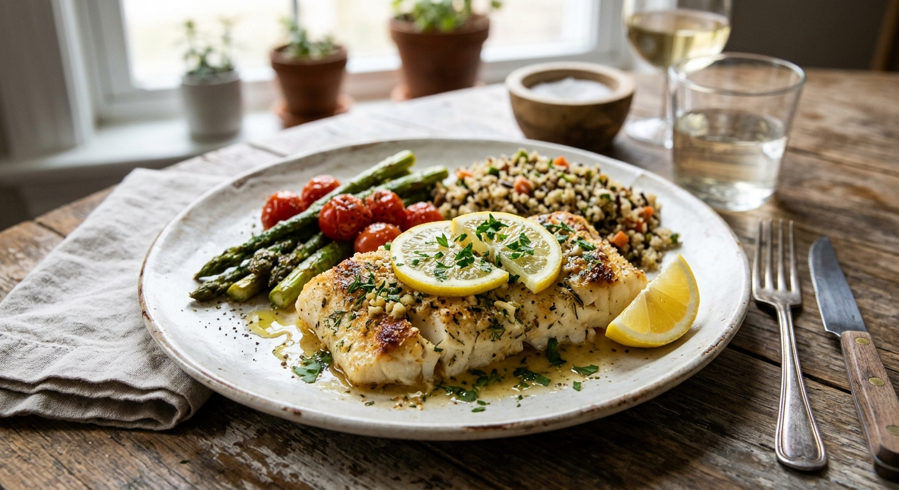

Lemon Garlic Baked Cod

Baked cod is one of the simplest ways to get a light, healthy dinner on the table. A lemon and garlic butter keeps the mild fish moist and flavorful, and the whole dish cooks in about 15 minutes.
Serve it with roasted vegetables, rice or a green salad.
Ingredients
- 4 cod fillets (about 6 oz each, 1 inch thick)
- 2 tbsp olive oil
- 2 tbsp melted butter
- 3 cloves garlic, minced
- Zest and juice of 1 lemon
- 1 tsp paprika
- 1/2 tsp salt
- 1/4 tsp black pepper
- 2 tbsp chopped fresh parsley
- Lemon slices, for serving
Instructions
- Preheat the oven to 400°F (200°C) and lightly oil a baking dish.
- Pat the fillets dry and place them in the dish. Season with the salt, pepper and paprika.
- Whisk the olive oil, butter, garlic, lemon zest and lemon juice and spoon over the fish.
- Bake for 12 to 15 minutes, until the fish is opaque and flakes easily with a fork, and reaches 145°F (63°C).
- Sprinkle with parsley and serve with lemon slices and the pan juices.
Ingredient Notes and Substitutions
Cod
Fresh or thawed frozen cod both work. Thaw it in the refrigerator and pat it dry. Halibut, haddock or tilapia are good substitutes.
Butter
Use all olive oil for a dairy-free version.
Tips for Success
- Fillet thickness decides the cooking time. Check at 12 minutes.
- Do not overbake, as cod dries out quickly.
- Pat the fish dry for the best flavor.
Variations
- Add cherry tomatoes and capers to the dish.
- Top with buttered breadcrumbs for the last 5 minutes.
Storage and Make-Ahead
Refrigerate leftovers for up to 2 days and reheat gently. Fish is best eaten fresh, so I do not recommend freezing the cooked dish.
Frequently Asked Questions
How do I know when cod is done?
It turns opaque, flakes easily and reaches 145°F inside.
Can I use frozen cod?
Yes, but thaw it fully first.
What should I serve with it?
Rice, roasted potatoes, asparagus or a simple salad.